Although eventually they are string, when you design a template in the Template Designer, the Location Paths are normally not needed to be entered directly. Rather, they are constructed using special dialogs or can be selected in the Location Path Chooser, as shown on this screenshot:
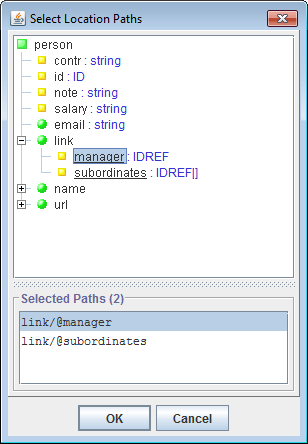Each Location Path is interpreted against a certain selected element (context node), which normally is the generator context element. As the result of an interpretation, a set of elements (Element Location Paths) or attributes (Attribute Location Paths) is produced.
Step1 / Step2 / ... / StepNStep1, ..., StepN-1StepNThe Location Path is interpreted by consecutive interpretations of all Location Steps defined in it.
The interpretation of a Location Step consists of taking some initial set of DSM nodes (called step input set) and producing by it another set of DSM nodes (called step result set). How exactly it is done depends on the step's settings (see below). Those settings, in fact, specify how the step is interpreted against only one initial node. The entire result set is produced as a union of the result sets of the step interpretations against every node in the input set.
As a whole, the Location Path is interpreted as follows:
axis :: ETs [filter]axis
childaxis:: prefix is specified in the location step).
selfchild-or-selfdescendantdescendant-or-selfattribute^
The attribute is the name of a certain context element's attribute
(whose type should be either IDREF or IDREF[]).
Such a specification is interpreted in the following way.
When the context element contains an attribute with 'attribute' name,
all values of that attribute are interpreted as the identifiers of some elements contained
in the DSM.
Each identifier is used to find a corresponding element, and, if found,
that element is added to the step's result set.
Example:
elementReference^::ClassDoc
{ expr }
The elements included in that axis are produced by a FlexQuery expression
specified between the curly brackets. The expression should return an enumeration
of new elements, which it may produce from the step's context node (the element)
passed to the expression as the
generator context element
(accessible via the contextElement property).
For example, the step:
child::Person
will do the same as the step:
{ findChildren("Person") }::Person
The real power of formula-axis is that you can program within the embedded expression
any algorithms of collecting of elements (for instance, finding them using element maps).
That profoundly transforms the capabilities of the entire search possible to organize using
Location Paths!
Note: The expression specified in formula-axis should always return the
Enumeration type. Otherwise, the generator will raise an error.
The returned enumeration should contain objects of GOMElement
or DSMElement types (objects of other types will be ignored).
The null value returned by the expression will be interpreted as
an empty enumeration.
ETs(ET1 | ET1 | ... | ETn),
where each ETn is an Element Type name.
*), which will include
all elements regardless of their type
filter
When specified, this subquery is executed for each element to be included in the step's result set.
The element is included only when the subquery returns true.
The tested element is accessible within the subquery as the
generator context element
(via the contextElement property).
The previous context element is restored again after the Location Path processing is finished.
@attributeattribute is the name of the searched attribute.
The Attribute Location Paths are normally used to collect values of
the same attribute by a number of elements at once.
The interpretation result of such a Location Path is a vector of all values of all attributes found.
lpath1 | lpath2 | ... | lpathN
Such an expression is called Compound Location Path and interpreted by
the successive interpretation of the Location Paths contained in it.
The result is a union of the elements or attributes produced by each component
Location Path.
Matching Element Types [matching condition] → Element Location PathMatching Element Types*
matching conditionfalse
the rule will be ignored.
This is similar to the enabling condition of
template components.
The tested element is accessible within the expression as the
generator context element
(via the contextElement property).
Element Location PathExactly, it works as the following:
Matching Element Types.
matching condition specified,
the context element must also comply with it (i.e. the condition subquery returns true).
Element Location Path
specified in the rule is interpreted against the context element.
The new elements produced by it are added to the result set.
Let's consider the data source that provides the basic information about a Java-project. It can be described with the following DTD:Here are the sample Element Location Rules defined for this data source:<!ELEMENT field> <!ELEMENT method> <!ELEMENT class (field*,method*,class*)> <!ELEMENT package (class*,package*)>
- Collect all classes (including the inner classes) contained both in the context element and in all its descendants:
* → descendant::class- If the context element is a package collect all top-level classes contained both in it and in all its subpackages:
package → child-or-self::package/child::class
descendant-axes.
At that, the search will involve all the element subtree attached to the context node.
However, in some situations it may be needed to limit the search to only some branches of the subtree.
Constructing Element Location Paths
using only descendant-axes may be not enough to achieve the necessary effect.
Even more difficulties arise when the search in indefinite depth need to involve
link- or
formula-axes.
That problem was solved in DocFlex by introducing Recursive Location Rules.
Recursive Location Rules are the same normal Element Location Rules, but in addition marked with a special recursive flag . This affects how such rules are interpreted.
A vector of Element Location Rules that includes some recursive rules is interpreted in repeating steps. On each step, some new elements are produced, which are added to the result set. Those new elements become also the input for the next step and so on, until no new elements are produced.
Precisely, this works as the following:
Such steps are repeated until no new elements are found.
DocFlex distinguishes elements by their ID. Therefore, only those elements are considered the new ones whose IDs have not yet occured on the previous iterations. Such an approach helps to prevent the infinite looping when the processed elements contains cyclic references, however, it requires each element to have a unique ID.
Let's consider a little more complicated version of the previous example. Now, the data source providing the information about a Java-project allows you to know a parent of each class (if any it has) and the interfaces the class directly implements.
The new DTD will be the following:
<!ELEMENT field> <!ELEMENT method> <!ELEMENT class (field*,method*,class*,interface*)> <!ELEMENT interface (field*,method*)> <!ELEMENT package (class*,interface*,package*)> <!ATTLIST class extends IDREF> <!ATTLIST interface extends IDREFS> <!ATTLIST class implements IDREFS>Let now our task is to collect all interfaces directly or indirectly implemented by a given class (this will include the interfaces directly implemented either by the class itself or by one of its ancestor classes and the interfaces that are the ancestors of those implemented directly). This can be done using the following set of Recursive Location Rules:
class → extends^::class class → implements^::interface interface → extends^::interfaceThe rules should be interpreted with the interested class as the initial context element. The result set should be filtered for the elements of
interfacetype.
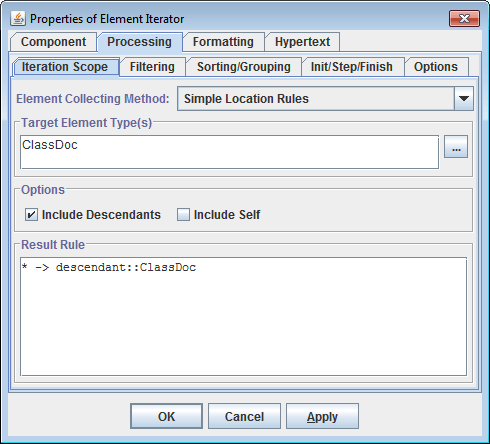
TargetETs), which the elements included in the generated
EIS must comply with.
* → child::TargetETs * → descendant::TargetETs * → child-or-self::TargetETs * → descendant-or-self::TargetET
Defining a single Location Rule:
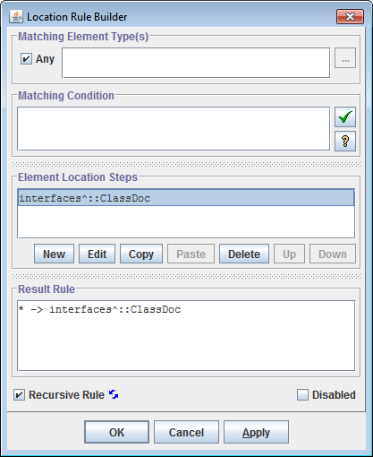
Defining a Location Step:
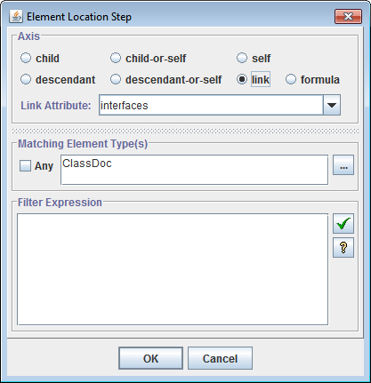
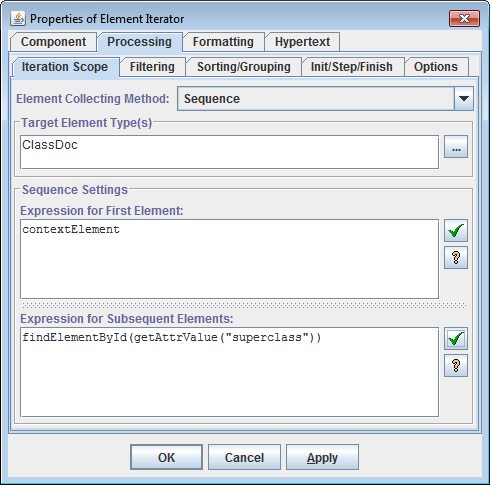
null it is made the
context element.
Then, the expression is processed and the next element is produced.
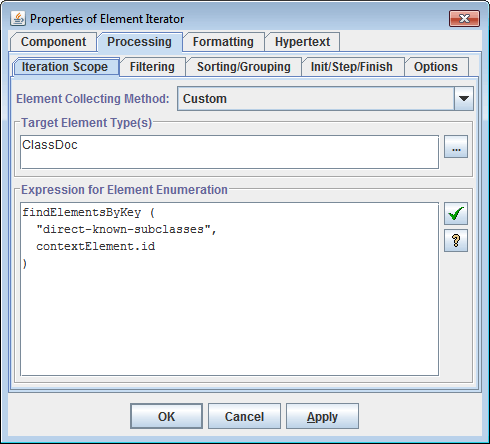
TargetETs), which the elements included in the generated
EIS must comply with.
contextElement property).
The expression should return the Enumeration type.
The returned enumeration should contain objects of GOMElement
or DSMElement types (objects of other types will be ignored).
The null value returned by the expression will be interpreted as empty enumeration.
Effectively, this method covers all the other methods above,
since all possibilities to collect elements (including by
Location Paths / Location Rules)
are equally supported on the level of FlexQuery functions.
On the other hand, it is an equivalent of the usage of formula-axis
in a single Location Rule: * → { expr }::TargetETs
|
Precisely, this type of filtering works as follows:
true, the element previously associated with
that key in the result enumeration is replaced with the current element.
Otherwise, the current element is skipped over and the processing goes to the next element.
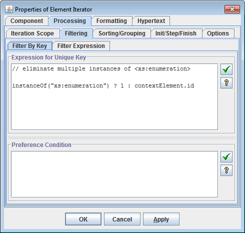
The element is passed to the query as the
generator context element.
The value returned by the query should be an object good to be a hash key.
The null value is also allowed.
Note: When you need to filter elements by several keys
with different types so that only the whole set of keys generated for each element
must be unique, you can do it by creating a single compound filtering key
using HashKey() function.
When specified, this query will be executed for each initial element whose key is repeating (that is, when there was an early processed element with the same key). The element is passed to the query as the generator context element.
If the query returns true, the old element will be replaced with the current element
in the result enumeration.
If the preference condition is not specified or returns false,
the current element with the repeating key will be filtered out (removed from the result enumeration).
Conversely, specifying in this field only "true"
(which will be also a valid expression) will have an effect that for all initial elements
associated with the same key only the last of them will appear in the result enumeration.
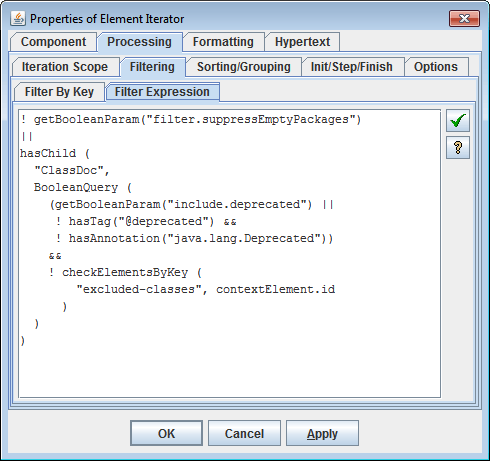
true, the element is included in the result enumeration.
Otherwise, it will be skipped over.
The tested element is passed to the query as the generator context element.
No sorting. The EIS is remained in the original order (i.e. the one that is naturally formed when the elements are being inserted in the EIS).
Reverses the original order. This option may be particularly useful when the EIS is generated by Sequence method.
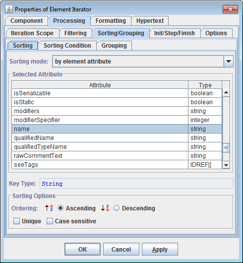The elements of the EIS are sorted by the value of the specified attribute (according to its data type).
Additional settings:
- ordering: ascending/descending
- case sensitive (for character values only)
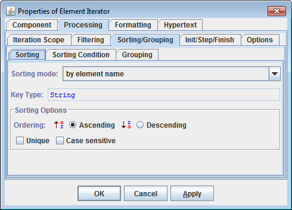The elements of the EIS are sorted by their names (i.e. the names of their Element Types) in lexicographical order. This option makes sense when the EIS contains many elements of the different types.
Additional settings:
- ordering: ascending/descending
- case sensitive (for character values only)
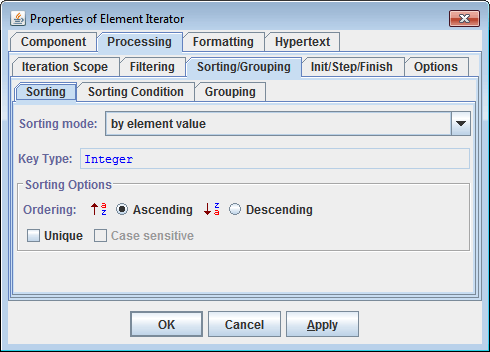The elements of the EIS are sorted by their values (regarding data types)
Additional settings:
- ordering: ascending/descending
- case sensitive (for character values only)
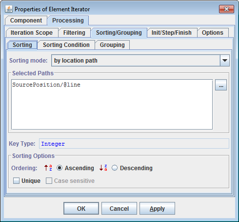
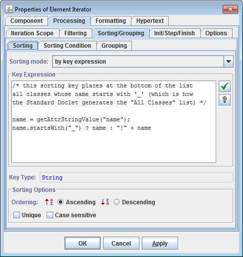
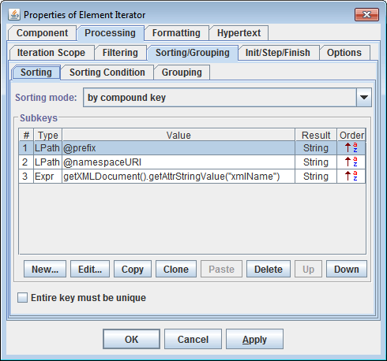This is the most general method of sorting the EIS. It includes all previous methods and allows much more, though it might seem a little complicated. In this case, the elements of the EIS are sorted by an arbitrary compound key generated for each element.
Each compound key consists of a certain sequence of the subkeys:
subkey1; subkey2; ...; subkeyNthat is generated for each element before the sorting. The compound keys are compared by comparing consecutively their constituent subkeys in the order in which the subkeys follow.
Each subkey has its own method of calculation. This method also determines the subkey's data type, according to which the corresponding subkeys are compared.
The subkey calculation method can be specified as one of the following:
- by Location Path
The value of the subkey is assigned from the value of an element or attribute retrieved by the specified Location Path. The Location Path is interpreted relatively to the EIS element for which the whole key is generated. The Location Path also determines the subkey's data type.
- by Formula
The value of the subkey is calculated by the specified FlexQuery-expression, which also determines the subkey's data type. The expression should derive the subkey value from the EIS element for which the whole key is generated. For doing so, the element is temporarily made the generator's context element and in this way can be accessed from within the expression.
In addition to the calculation method, the comparison of the subkeys may be adjusted with following settings:
- subkey ordering: ascending/descending
- case sensitivity (for character subkeys only)
This is controlled by the “Sorting Condition” -- a boolean FlexQuery.
When specified, it is calculated each time before
sorting starts.
When the query returns false, no sorting is done.
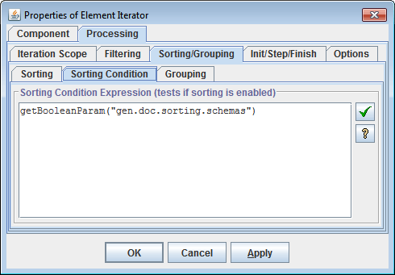
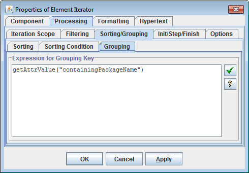When the grouping key expression is specified, it works as follows.
After the initial elements have been collected, filtered and sorted, the result sequence of elements is broken into groups according to the grouping keys generated for each element by the FlexQuery specified in the “Expression for Grouping Key” of the Element Iterator.
Each continuous subsequence of elements with equal grouping keys produces a group. As a result, the sequence of elements prepared for iterations is converted into a sequence of element groups. The ordering of elements in each group remains the same as in the initial sequence.
Since groups are not elements, the
Element Iterator
cannot iterate by them directly.
So, it will iterate by the first elements taken from each group.
However, at that, on each iteration step, the
'iterator.groupElements' property will be updated so as
to provide the enumeration of all elements in the given group.
This allows you to specify a nested iterator that will iterate by the elements in the group.
In the simplest case, the iteration scope of the nested Element Iterator should be specified as custom with the following Expression for Element Enumeration:
parentIterator.groupElements
(Other possibilities of using 'GOMIterator.groupElements' property are also possible.)
Notes:
'GOMIterator.groupElements' property returns
a new element enumeration (i.e. a new
java.util.Enumeration
object) each time it is accessed.
But, the elements contained in the enumeration will be the same.
This allows you to specify several nested sibling
Element Iterators
(within the same parent one) to iterate the elements of the same group in different ways.